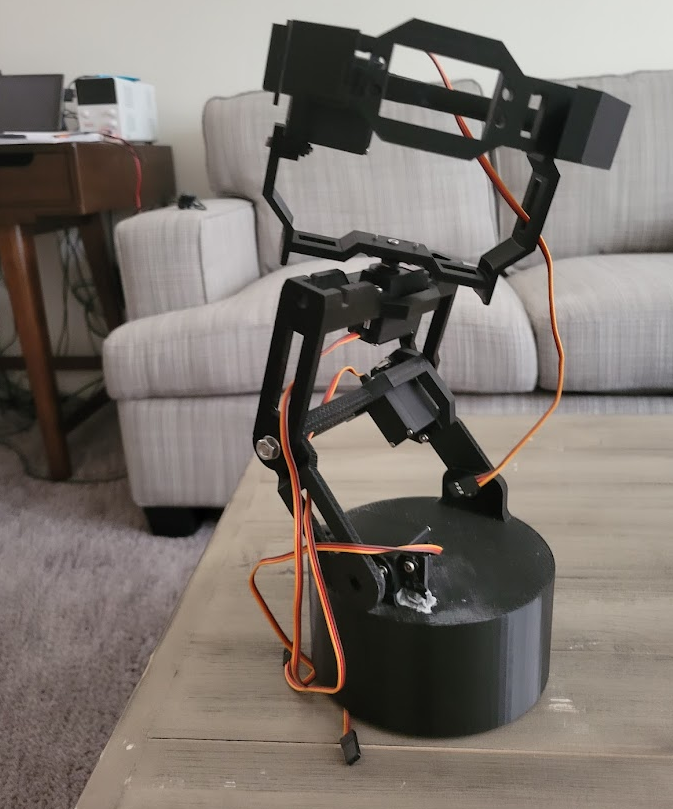

The purpose of this project was to create a fully functional 6 Degree of Freedom robot arm
like the common universal robots and others used in industry
on automated lines etc.
Traditionally, these robots perfrom fast paced, repeatable, and extremeley accurate tasks to fulfill their purposes.
The robots must be precise, robust, and reliable enough to get the job done. With such a daunting set of requirements
it's no surprise that a high quality robot arm can cost more than $5,000 with many popularly used in industry being much more expensive than that.
I don't have that kind of pocket change for all the things I'd like to do with a robot arm, but I really
want to have an arm of my own to use around the house.
Therefore my project goal was to see how good of a robot arm I could make with limited funds, time, and resources that mimics a the function of an industrial robot as much as I can.
Fig.1 Revyn Arm V1 Render.
The first steps were to set a budget, time-frame, and outline some clear requirements for my project.
I decided I could allot about $300 for the hardware and give myself 1 month with the first portion of the
month dedicated to the CAD design and schematics and the later half to control.
A more detailed compilation of the purpose, deliverables, and project schedule can be found here in my Project Organization documentation.
A few decisions were made to simplify the process and keep things cheaper. With my background in mechancial engineering, I am comfortable 3D modeling all
the custom parts I might need. I have an Ender 3 3D printer and will make the parts using that. I can also control the robot using an
Arduino Mega 2560 and PCA685 have laying around (I will factor these parts and materials into the cost).
I will program the Arduino in C code, and then use MATLAB to send serial commands with joint variables to move the robot.
In the future I may create python scripts that mimic the MATLAB ones.
To summarize my approach, I have created a small functional requirements table below.
NUM.
REQUIREMENTS
SPECIFICATION
VERIFICATION
1
6 DOF in Hardware
6 servos that can articulate simulataneously
Arduino articulates each joint by a defined angle
2
Robot moves accurately
Within +/- 2cm
Measure error after calling same joint command several times
3
Robot is within budget
<$300
Budget is not exceeded
4
Robot controller controls robot at sufficient rate
Max Servo rate is ~60Hz
Send commands while increase rate to see when commands faulter
5
Compatible with serial commands
Written in Python or MATLAB and Arduino C code
Serial Commands can automatically be sent from external source
5
Custom hardware is 3D printed
Ender 3 with PLA
Parts designed in Fusion 360. Printed and constructed to match virtual model
Fig.2 Revyn Arm CAD Development.
CAD Design
I dove right into the CAD design for the robot. I wanted to make every joint modular.
I say modular to mean that the separate joints could be arranged interchangably. Like legos
the different pieces of the robot could potentially be connected in diffrent order. Therefore all
of the joints (exculding the final joint at the end effector) contain holes that could be used to attach to
different joints.
A rendering of the completed design can be seen in figure 1, and the Fusion 360 design interface for the robot
can be seen in figure 2.
The base design of the robot features a shoulder cup that rotates about the z axis (see figure 3). There is a servo
inside the cup that the robot rests on. The next joint is another shoulder joint that acts like an elbow. Joint 3 also works like an elbow.
The 4th joint rotates like a forearm. The 5th joint is like another elbow joint, called the wrist joint. The final joint is another forearm style
rotating wrist joint. At the top is a quick n' cheap modeled end effector as I choose to use an off the shelf part since I was low on time.
Fig.3 Revyn arm at home pose with frame.
There ended up being 6 custom parts modeled and printed for the robot. There is the base, the base cup, joint 2, joint 3, joint 4, and joint 5.
The base cup could be interpreted as the base cup as it is directly attached to the first servo. The second and third joints in the model are refered
to as short joints because the first design featured both of these joints being an inch longer than the final product.
The MG996R servos used to build this robot were a little on the cheaper side, and could not supply enough torque to lift
the robot without some help if the arm was too long. I shortened the lengths of 2 and 3 to get the robot to perform a little bit better.
We'll address this issue again later. The following video shows the completed Revyn Arm model with an exploded view and
the 180° functionality of each joint.
Some of my Recent Projects

6DOF Robot Arm
A small robot arm easily placed on a desk and programmable for performing repeatable tasks. Uses Computer ision